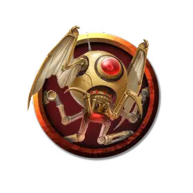

Заводной наблюдатель
Clockwork Observer
Крошечный Конструкт, без мировоззрения

Класс Доспеха 14 (природный доспех)
Хиты 7 (2к4 + 2)
Скорость 0 футов, летая 30 футов (парит)
| мод | спас | ||
|---|---|---|---|
| СИЛ | 1 | −5 | −5 |
| ЛОВ | 16 | +3 | +3 |
| ТЕЛ | 13 | +1 | +1 |
| мод | спас | ||
|---|---|---|---|
| ИНТ | 3 | −4 | −4 |
| МДР | 15 | +2 | +2 |
| ХАР | 1 | −5 | −5 |
Навыки Восприятие +6
Иммунитет к урону яд
Иммунитет к состояниям испуг, истощение, окаменение, отравление, паралич
Чувства слепое зрение 60 футов, пассивное Восприятие 16
Языки Понимает языки своего создателя, но не может говорить
Опасность 0
Бонус мастерства +2
Особенности
Облет. Наблюдатель не провоцирует атаки, когда он вылетает за пределы досягаемости врага.
Телепатическая связь. Пока наблюдатель находится в пределах 1 мили от своего создателя, он магическим образом может передать то, что видит, своему создателю, и они могут общаться телепатически.
Необычная природа. Наблюдателю не нужен воздух, еда, питье или сон.
Действия
Визг. Наблюдатель издаёт механический визг до начала своего следующего хода или до тех пор, пока его хиты не упадут до 0. Этот крик можно услышать в радиусе 300 футов.
Описание
Заводной наблюдатель служит воздушным шпионом для своего создателя. Он выглядит как механический шар размером с грейпфрут, подвешенный под мягко гудящими лопастями пропеллера. В шар встроены проницательные хрустальные глаза, которые позволяют наблюдателю видеть сразу в нескольких направлениях. Когда он чувствует что-то тревожное, наблюдатель подает сигнал тревоги, издавая вопль, который можно услышать в пределах 300 футов. Наблюдатель также может телепатически передать то, что он обнаружил, своему создателю, при условии, что они находятся в пределах 1 мили друг от друга.